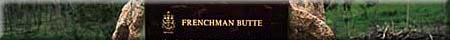
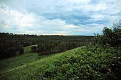
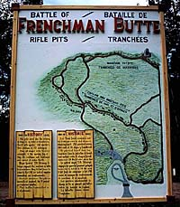
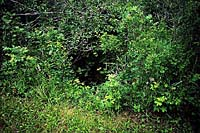
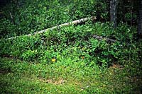
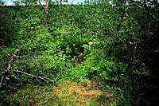
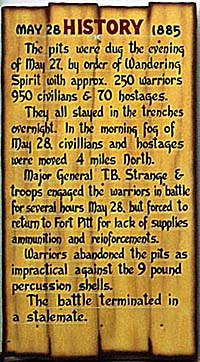
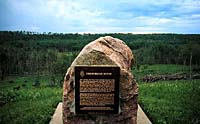
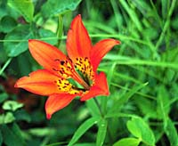

|
|
"Environmentally Sensitive Area". Please be careful where you walk and try not to disturb the natural environment. For additional information please contact Tourism Saskatchewan. | ||
| Frenchman Butte | |||
| GPS: | 53d 37.67m N | 109d 34.46m W | 1611 feet |
| Location: | 5 kms northeast of the town of Frenchman Butte. | ||
 The historic site of Frenchman Butte can be found northeast of the town bearing the same name. A picnic area and public washrooms are provided at this enchanting area. There is no fort, there are no buildings or artifacts, and there is no museum or tour guides. Instead, you will find trenches which have been carved out of the hillside. | |||
 In the spring of 1885, this was a battlefield. Since that time, very little has changed. Climbing into trenches over a hundred years old, where people fought and were killed or injured, has a way of transporting you back in time. | |||
 Warrior pit. | |||
 Hostage pit. | |||
 Civilian pit. | |||
 The pits were dug the evening of May 27, 1885 by order of Wandering Spirit with approximately 250 warriors 950 civilians and 70 hostages. They all stayed in the trenches overnight. In the morning fog of May 28, but forced to return to Fort Pitt for lack of supplies, ammunition and reinforcements. Warriors abandoned the pits as impractical against the 9 pound percussion shells. The battle terminated in a stalemate. | |||
 After pillaging Fort Pitt, several hundred Crees, led by Big Bear, entrenched themselves here. They were followed by Major-General T.B. Strange, commanding the Alberta Field Force, about 300 men, including units of the Winnipeg Light Infantry, 65th (Montreal) Voltigeurs, Alberta Mounted Rifles, Steele's Scouts, and North West Mounted Police. | |||
 After a sharp engagement on May 28, the troops retired. Later the Indians withdrew northward, but Big Bear returned, and on July 2nd, surrendered at Fort Carlton. | |||